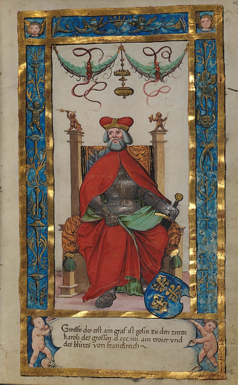

Greve av Altdorf. Blev ca 49 år.
776 Altdorf, Schweiz.
omkring 825 Schwaben, Frankiska riket (i nuvarande Tyskland).
Welf var stamfader till familjen Welfs berömda familj. Han ägde stora besittningar i Schwaben och Bayern och var greve av Bayern och herre till Althoff. 1
"Welf var gift med sachsaren Heilwig, som av Chelles kallas abbedissa. 826 (troligen efter hans död).
Welf och Heilwig fick minst fyra barn.
Hans avancemang började med de äktenskap han ingick för sina två döttrar medlemmar av den karolingiska familjen.
Den äldsta dottern Judith (* 795/797 - † 09.04.843), gifte sig i februari 819 med Kejsar Ludwig den fromme († 20.06.840 (karolingiska).
Den yngre dottern Hemma (* 803/808 - † 31.01.876), gifte sig 827 med Ludvig Tysken, 843 kung av Östfranken."
Från engelskspråkiga Wikipedia (översatt):
"Welf I (eller Hwelf) († c. 825) är den första dokumenterade förfadern till det äldre huset Welf.
Han nämns som en "comes" (greve) i de frankiska länderna i Bayern.
Han var son till Rothard av Argengau och sonson till Harrad.
Welf härstammade från en framstående dynasti av frankiska adelsmän. Han nämns bara en gång – vid bröllopet mellan hans dotter Judith och kejsar Ludvig den fromme i Aachen år 819.
en mäktig ställning genom besittningarna i Oberschwaben, från vilka han möjligen hade ärvt hans mor Heilwig.
Welfs familj blev politiskt mäktig när Ludvig den fromme valde Welfs äldsta dotter till hans andra hustru efter att hans gemål, Ermengarde av Hesbaye, hade dött.
Även om Welf själv aldrig visade sig offentligt, blev hans familj sammanflätad med den Karolingiska dynastin."
Om det äldre huset Welf.
"Det äldre huset Welf (känt som Rudolphins av Burgund) var en frankisk adelsdynasti av europeiska härskare dokumenterade sedan 800-talet. Nära besläktad med den karolingiska bestod den av en burgundisk grupp och en schwabisk grupp. Det är dock inte slutgiltigt klargöras om de två grupperna bildade en dynasti eller om de bara delade samma namn genom att Ett sammanträffande. Medan det äldre huset dog ut i manslinjen av hertig Welf av Vid Kärntens död 1055 gifte hans syster Kunigunde in sig i det italienska huset Este och blev stamfader till den yngre ätten Welf.
Enligt en familjetradition kan Welfers förfäder spåras tillbaka till den shiriska prinsen Edeco († 469), en förtrogen till kung Attila Hönern och hans son Odovakar, kung av Italien från 476. En tidig förfader kan dock ha varit den frankiske adelsmannen Ruthard († före 790), en Greve av Argengau och administratör hos den karolingiske kungen Pipin den yngre av Alamannien.
Ursprunget till namnet Welf (även Guelph från italienska Guelfi) är inte slutgiltigt Beslutsam.
Den äldre av de två grupperna var burgunder. Den äldsta kända medlemmen var Welf, den förste greven av Altdorf. Han nämns endast år 819 som far till kejsarinnan Judith.
Hans yngre söner, Conrad och Rudolf, följde hans syster Judith till hennes make. Ludvig den frommes hov, där deras ärelystnad upprätthöll sin ärftliga rang. Då Judit fängslades av sina styvsöner, bröderna rakades som munkar, men klagade och och tilläts återvända till domstolen.
Judiths syster Hemma (* 803/808 - † 876) gifte sig senare med Judiths styvson Ludvig den tyske och blev drottning av Östfranken." 2